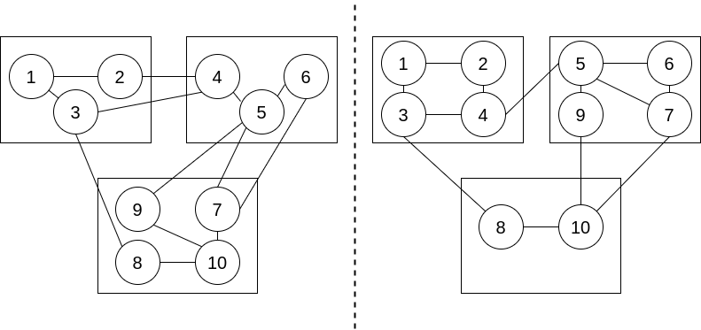

danilo.pianini@unibo.itgianluca.aguzzi@unibo.itangelo.filaseta@unibo.itCompiled on: 2025-09-08 — versione stampabile
Come programmiamo il sistema
$\Rightarrow$ un lunghissimo percorso: muoviamo i primi passi..
Nota: sono tecniche/linee guida importanti per gestire il livello di articolazione di Java

modularità = alta coesione intra-modulo + basso accoppiamento inter-moduli
Una classe A dipende da una classe B se in A si menziona B (ad es. come input di un metodo) o qualche sua proprietà.
A si usano anche costruttori / campi / metodi di B.Implicazione
A dipende da B e modifico B, dovrò probabilmente modificare anche A.Costruendo software complesso con troppe dipendenze, si giunge al punto che ogni singola modifica ne richiederebbe molte altre, e rischierebbe quindi di essere troppo costosa – risultato: non si cambia più il software!
Incapsulamento: il grado con cui un insieme di dati e funzioni sono “parte interna” di un oggetto
L’incapsulamento si fonda su due ingredienti cruciali della programmazione OO:
public solo quei (pochi) metodi/costruttori necessari a interagire con (o creare) le sue istanzeprivate
public, si riduce la superficie accessibile e quindi la dipendenza potenzialepackage it.unibo.encapsulation.bad;
public class CounterValue {
public final int value;
public CounterValue(int value) {
this.value = value;
}
}
package it.unibo.encapsulation.bad;
public class CounterFunctions {
static CounterValue increment(CounterValue cv) {
return new CounterValue(cv.value + 1);
}
public static void main(String[] args){
CounterValue result = CounterFunctions.increment(new CounterValue(10));
System.out.println("Result: " + result.value);
}
}
Counter (POCO incapsulata)package it.unibo.encapsulation.bad;
public class Counter {
int value;
public void increment() {
value++;
}
}
package it.unibo.encapsulation.bad;
public class UseCounter {
public static void main(String[] args){
Counter c = new Counter();
c.increment();
c.increment();
System.out.println("Current value: " + c.value);
c.value -= 10;
System.out.println("Current value: " + c.value);
}
}
Counter (ben incapsulata)class Counter {
/* Il campo è reso inaccessibile */
private int countValue;
/* E' il costruttore che inizializza i campi! */
public Counter() {
this.countValue = 0;
}
/* Unico modo per osservare lo stato */
public int getValue() {
return this.countValue;
}
/* Unico modo per modificare lo stato */
public void increment() {
this.countValue++;
}
}
public class UseCounter {
public static void main(String[] args) {
Counter c = new Counter();
System.out.println(c.getValue()); // 0
c.increment();
c.increment();
c.increment();
c.increment();
System.out.println(c.getValue()); // 4
}
}
intgetValue() e increment()public class UseCounter2 {
/* Conto su un array, con Contatore creato internamente */
static int countElements(int[] array, int elem) {
Counter c = new Counter();
for (int i : array) { // schema "for-each"
if (i == elem) {
c.increment();
}
}
return c.getValue();
}
/* Conto su un array, con Contatore passato in input */
static void countInArray(int[] array, int elem, Counter c) {
for (int i : array) {
if (i == elem) {
c.increment();
}
}
}
/* Conto su una matrice, riusando appieno la countInArray */
static void countInMatrix(int[][] matrix, int elem, Counter c) {
for (int[] array : matrix) {
countInArray(array, elem, c);
}
}
}
0increment()È grazie a questa idea che è più facile comporre oggetti in sistemi più complicati (vedi funzione countInMatrix)
final (oltre che private), e..
Per ora è sufficiente saperli riconoscere e costruire
Indicare anche final variabili e argomenti che non verranno modificati
ImmutablePoint3Dpublic class ImmutablePoint3D {
private final double x; // x coordinate
private final double y; // y coordinate
private final double z; // z coordinate
public ImmutablePoint3D(final double x, final double y, final double z) {
this.x = x;
this.y = y;
this.z = z;
}
public double getSquareModule() {
return this.x * this.x + this.y * this.y + this.z * this.z;
}
public double getX() {
return this.x;
}
public double getY() {
return this.y;
}
public double getZ() {
return this.z;
}
/* A method that changes state is mimicked by creating a new object */
public ImmutablePoint3D translate(final double x, final double y, final double z) {
return new ImmutablePoint3D(this.x + x, this.y + y, this.z + z);
}
}
UseImmutablePoint3Dpublic class UseImmutablePoint3D {
public static void main(String[] args) {
final ImmutablePoint3D p = new ImmutablePoint3D(10, 20, 30);
// l'oggetto puntato da p non potrà essere modificato
ImmutablePoint3D q = p.translate(1, 1, 1);
// q punta ad un nuovo oggetto
System.out.println(p.getX() + " " + p.getY() + " " + p.getZ());
// 10,20,30
System.out.println(q.getX() + " " + q.getY() + " " + q.getZ());
// 11,21,31
q = q.translate(1, 1, 1);
// la variabile q punta ad un nuovo oggetto
// il vecchio verrà eleminato dal GC
System.out.println(q.getX() + " " + q.getY() + " " + q.getZ());
// 12,22,32
}
}
LampIn un sistema domotico, dovremo gestire un certo numero di lampadine (da accendere/spegnere e pilotare tramite un apposito controllore centralizzato, oltre che tramite i comandi a muro). Tali comandi sono a pulsante con controllo di intensità (10 livelli). Il controllore deve poter accedere alla situazione di ogni lampadina (accesa/spenta, livello di intensità) e modificarla a piacimento. Al primo avvio, le lampadine sono spente e il controllo di intensità è a zero (in un intervallo $[0,1]$).
Come procediamo alla costruzione della classe Lamp?
Ovvero, del nome della classe e delle signature di operazioni pubbliche (metodi e costruttori)
LampLamp/* Classe d'esempio che modella il concetto di Lampadina
in un sistema Domotico */
public class Lamp {
/* Inizializzazione */
public Lamp() { .. }
/* Accendo/Spengo */
public void switchOn() { .. }
public void switchOff() { .. }
/* Meno intenso/Più intenso/Quanto intenso */
public void dim() { .. }
public void brighten() { .. }
public void setIntensity(double value) { .. }
/* Selezione */
public double getIntensity() { .. }
public boolean isSwitchedOn() { .. }
}
Ovvero, dei campi privati della classe
Lampboolean switchedOn)double intensity)Lamp/* Classe d'esempio che modella il concetto di Lampadina
in un sistema Domotico */
public class Lamp{
/* Campi */
private boolean switchedOn;
private double intensity;
/* Costruttore */
public Lamp(){ .. }
/* Metodi */
public void switchOn(){ .. }
public void switchOff(){ .. }
public void dim(){ .. }
public void brighten(){ .. }
public void setIntensity(double value){ .. }
public double getIntensity(){ .. }
public boolean isSwitchedOn(){ .. }
}
Ovvero, del corpo di costruttori e metodi
LampswitchOn(), switchOff() sono semplici setter del campo switchedOnisSwitchedOn(), getIntensity() semplici getter dei due campidim() e brigthen() modificano il campo intensity (se nel range!)public class Lamp {
private double intensity;
private boolean switchedOn;
public Lamp(){
this.switchedOn = false;
this.intensity = 0;
}
public void switchOn(){
this.switchedOn = true;
}
public void switchOff(){
this.switchedOn = false;
}
public void dim(){
this.intensity = (this.intensity < 0.1 ? 0 : this.intensity-0.1);
}
public void brighten(){
this.intensity = (this.intensity > 0.9 ? 1 : this.intensity+0.1);
}
public void setIntensity(double value){
this.intensity = value;
if (value < 0) { this.intensity = 0; } // Mal formattato!
if (value > 1) { this.intensity = 1; } // Mal formattato!
}
public double getIntensity(){
return this.intensity;
}
public boolean isSwitchedOn(){
return this.switchedOn;
}
}
intensity – meglio un int fra $0$ e $10$!!public class Lamp {
/* Costanti luminosità */
private static final int LEVELS = 10;
private static final double DELTA = 0.1;
/* Campi della classe */
private int intensity;
private boolean switchedOn;
/* Costruttore */
public Lamp() {
this.switchedOn = false;
this.intensity = 0;
}
/* Gestione switching */
public void switchOn() {
this.switchedOn = true;
}
public void switchOff() {
this.switchedOn = false;
}
public boolean isSwitchedOn() {
return this.switchedOn;
}
/* Gestione intensita' */
private void correctIntensity() { // A solo uso interno
if (this.intensity < 0) {
this.intensity = 0;
} else if (this.intensity > LEVELS) {
this.intensity = LEVELS;
}
}
public void setIntensity(final double value) {
this.intensity = Math.round((float) (value / DELTA));
this.correctIntensity();
}
public void dim() {
this.intensity--;
this.correctIntensity();
}
public void brighten() {
this.intensity++;
this.correctIntensity();
}
public double getIntensity() {
return this.intensity * DELTA;
}
public String toString() {
return "Acceso: " + this.isSwitchedOn() + " Intensità: " + this.getIntensity();
}
}
LampUn possibile caso (non costituisce da solo un test esaustivo):
public class UseLamp {
private static void test1() {
final Lamp l = new Lamp();
System.out.println(l);
l.switchOn();
l.setIntensity(0.5);
l.dim();
l.dim();
System.out.println(l);
l.brighten();
System.out.println(l);
// Acceso: true Intensità: 0.4
}
public static void main(final String[] s) {
UseLamp.test1();
// altri test...
}
}
toString()+ per concatenare stringhe a oggettipublic class UseLampString {
public static void main(String[] s) {
LampString l = new LampString();
l.switchOn();
l.setIntensity(0.5);
l.dim();
l.dim();
l.brighten();
System.out.println(l.toString());
System.out.println("Oppure : " + l);
}
}
Non c’è un numero giusto
Non è possibile in generale controllare in modo completo
Bisogna trovare il giusto rapporto tempo/risultato
Certamente, un unico scenario è insufficiente
La metodologia test-driven development consiglia di costruire test esaustivi prima dell’effettivo sviluppo di ogni funzionalità
danilo.pianini@unibo.itgianluca.aguzzi@unibo.itangelo.filaseta@unibo.itCompiled on: 2025-09-08 — versione stampabile